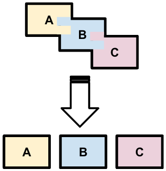

<!DOCTYPE html>
<html lang="en">
  <head>
    <meta charset="utf-8" />
    <meta name="viewport" content="width=device-width, initial-scale=1.0, maximum-scale=1.0, user-scalable=no" />

    <title></title>
    <link rel="stylesheet" href="dist/reveal.css" />
    <link rel="stylesheet" href="dist/theme/iph.css" id="theme" />
    <link rel="stylesheet" href="plugin/highlight/spyder.css" />
	<link rel="stylesheet" href="css/layout.css" />
	<link rel="stylesheet" href="plugin/customcontrols/style.css">


    <script defer src="dist/fontawesome/all.min.js"></script>

	<script type="text/javascript">
		var forgetPop = true;
		function onPopState(event) {
			if(forgetPop){
				forgetPop = false;
			} else {
				parent.postMessage(event.target.location.href, "app://obsidian.md");
			}
        }
		window.onpopstate = onPopState;
		window.onmessage = event => {
			if(event.data == "reload"){
				window.document.location.reload();
			}
			forgetPop = true;
		}

		function fitElements(){
			const itemsToFit = document.getElementsByClassName('fitText');
			for (const item in itemsToFit) {
				if (Object.hasOwnProperty.call(itemsToFit, item)) {
					var element = itemsToFit[item];
					fitElement(element,1, 1000);
					element.classList.remove('fitText');
				}
			}
		}

		function fitElement(element, start, end){

			let size = (end + start) / 2;
			element.style.fontSize = `${size}px`;

			if(Math.abs(start - end) < 1){
				while(element.scrollHeight > element.offsetHeight){
					size--;
					element.style.fontSize = `${size}px`;
				}
				return;
			}

			if(element.scrollHeight > element.offsetHeight){
				fitElement(element, start, size);
			} else {
				fitElement(element, size, end);
			}		
		}


		document.onreadystatechange = () => {
			fitElements();
			if (document.readyState === 'complete') {
				if (window.location.href.indexOf("?export") != -1){
					parent.postMessage(event.target.location.href, "app://obsidian.md");
				}
				if (window.location.href.indexOf("print-pdf") != -1){
					let stateCheck = setInterval(() => {
						clearInterval(stateCheck);
						window.print();
					}, 250);
				}
			}
	};


        </script>
  </head>
  <body>
    <div class="reveal">
      <div class="slides"><section  data-markdown><script type="text/template"><!-- .slide: class="has-light-background drop" data-background-color="#f8f8f8" -->
<div class="" style="position: absolute; left: 0px; top: 0px; height: 700px; width: 960px; min-height: 700px; display: flex; flex-direction: column; align-items: center; justify-content: center" absolute="true">

### <i class="fas fa-award"></i> IP Honores

 ####  *Funciones III*

[Eduardo Rosales](mailto:ee.rosales24@uniandes.edu.co)

Departamento de Ingeniería de Sistemas y Computación

Universidad de los Andes
</div></script></section><section  data-markdown><script type="text/template"><!-- .slide: class="has-light-background drop" data-background-color="#f8f8f8" -->
<div class="" style="position: absolute; left: 0px; top: 0px; height: 700px; width: 960px; min-height: 700px; display: flex; flex-direction: column; align-items: center; justify-content: center" absolute="true">

### ¿Qué responsabilidades tiene una función?
</div></script></section><section  data-markdown><script type="text/template"><!-- .slide: class="has-light-background drop" data-background-color="#f8f8f8" -->
<div class="" style="position: absolute; left: 0px; top: 0px; height: 700px; width: 960px; min-height: 700px; display: flex; flex-direction: column; align-items: center; justify-content: center" absolute="true">

### Principio de Responsabilidad Única (Single Responsibility Principle) - SRP (1/4)
- **"Una función debe tener una, y solo una, razón para cambiar"**
	-  Una función debe tener un **único propósito**
</div></script></section><section  data-markdown><script type="text/template"><!-- .slide: class="has-light-background drop" data-background-color="#f8f8f8" -->
<div class="" style="position: absolute; left: 0px; top: 0px; height: 700px; width: 960px; min-height: 700px; display: flex; flex-direction: column; align-items: center; justify-content: center" absolute="true">

### Principio de Responsabilidad Única (Single Responsibility Principle) - SRP (2/4)

-  Si una función tiene dos o más propósitos
	- Es una indicación
		- De que la implementación se debería distribuir 
			- En dos o más funciones
</div></script></section><section  data-markdown><script type="text/template"><!-- .slide: class="has-light-background drop" data-background-color="#f8f8f8" -->
<div class="" style="position: absolute; left: 0px; top: 0px; height: 700px; width: 960px; min-height: 700px; display: flex; flex-direction: column; align-items: center; justify-content: center" absolute="true">

### Principio de Responsabilidad Única (Single Responsibility Principle) - SRP (3/4)

- Ventajas del SRP:
	- Mejora la modularidad/encapsulamiento
	- Hace el código más fácil 
		- De entender y mantener
	- Fomenta la reutilización del código
	- Simplifica cambios futuros
	- Facilita las pruebas y la depuración
</div></script></section><section  data-markdown><script type="text/template"><!-- .slide: class="has-light-background drop" data-background-color="#f8f8f8" -->
<div class="" style="position: absolute; left: 0px; top: 0px; height: 700px; width: 960px; min-height: 700px; display: flex; flex-direction: column; align-items: center; justify-content: center" absolute="true">

### Principio de Responsabilidad Única (Single Responsibility Principle) - SRP (4/4)

- Al aplicar el SRP
	- Cada función se responsabiliza 
		- De una **parte específica** del problema
			- Mejora la modularidad


</div></script></section><section  data-markdown><script type="text/template"><!-- .slide: class="has-light-background drop" data-background-color="#f8f8f8" -->
<div class="" style="position: absolute; left: 0px; top: 0px; height: 700px; width: 960px; min-height: 700px; display: flex; flex-direction: column; align-items: center; justify-content: center" absolute="true">

### Mala práctica que viola el SRP

``` Python
def calcular_area_y_perimetro_rectangulo(ancho: float, alto: float) -> ?:
    area = ancho * alto
    perimetro = 2 * (ancho + alto)
    return ?  # ¿Qué retornar?
```

- &shy;<!-- .element: class="fragment" data-fragment-index="1" -->❌  Esta función tiene dos propósitos
	- &shy;<!-- .element: class="fragment" data-fragment-index="2" --> ❌  Tiene dos razones para cambiar
</div></script></section><section  data-markdown><script type="text/template"><!-- .slide: class="has-light-background drop" data-background-color="#f8f8f8" -->
<div class="" style="position: absolute; left: 0px; top: 0px; height: 700px; width: 960px; min-height: 700px; display: flex; flex-direction: column; align-items: center; justify-content: center" absolute="true">

### Práctica que se alinea con  el SRP

``` Python
	def calcular_area_rectangulo(ancho: float, alto: float) -> float:
	    return ancho * alto
```

<br>

``` Python
def calcular_perimetro_rectangulo(ancho: float, alto: float) -> float:
    return 2 * (ancho + alto)
```

<br>

 ✅ Cada función tiene un propósito único
</div></script></section><section  data-markdown><script type="text/template"><!-- .slide: class="has-light-background drop" data-background-color="#f8f8f8" -->
<div class="" style="position: absolute; left: 0px; top: 0px; height: 700px; width: 960px; min-height: 700px; display: flex; flex-direction: column; align-items: center; justify-content: center" absolute="true">

### 🌀 Composición de funciones 🌀

 - Ejecutar múltiples funciones en secuencia

- La salida de una función → Entrada de otra función
  - Todo en una sola línea

- Los tipos deben ser compatibles entre funciones

- El orden de la composición es clave
</div></script></section><section  data-markdown><script type="text/template"><!-- .slide: class="has-light-background drop" data-background-color="#f8f8f8" -->
<div class="" style="position: absolute; left: 0px; top: 0px; height: 700px; width: 960px; min-height: 700px; display: flex; flex-direction: column; align-items: center; justify-content: center" absolute="true">

### Ejemplo de composición de funciones (1/5)

- ¿Cuál es el propósito de cada función?

```python
def calcular_area_cuadrado(lado: float) -> float:
    return lado * lado

def calcular_area_triangulo(base: float, altura: float) -> float:
    return (base * altura) / 2

def calcular_area_total(lado_cuadrado: float, base_triangulo: float, altura_triangulo: float) -> float:
    area_cuadrado = calcular_area_cuadrado(lado_cuadrado)
    area_triangulo = calcular_area_triangulo(base_triangulo, altura_triangulo)
    return area_cuadrado + area_triangulo

print(calcular_area_total(4.0, 4.0, 4.0))  # → 24.0
```

- &shy;<!-- .element: class="fragment" data-fragment-index="1" -->`calcular_area_cuadrado()`
	- Retorna el área de un cuadrado dado su lado
- &shy;<!-- .element: class="fragment" data-fragment-index="2" -->`calcular_area_triangulo()`: 
	- Retorna el área de un triángulo dada su base y altura
- &shy;<!-- .element: class="fragment" data-fragment-index="3" -->`calcular_area_total()`: 
	- Retorna la suma del área de un cuadrado y un triángulo
</div></script></section><section  data-markdown><script type="text/template"><!-- .slide: class="has-light-background drop" data-background-color="#f8f8f8" -->
<div class="" style="position: absolute; left: 0px; top: 0px; height: 700px; width: 960px; min-height: 700px; display: flex; flex-direction: column; align-items: center; justify-content: center" absolute="true">

### Ejemplo de composición de funciones (2/5)

```python[1,12]
def calcular_area_cuadrado(lado: float) -> float:
    return lado * lado

def calcular_area_triangulo(base: float, altura: float) -> float:
    return (base * altura) / 2

def calcular_area_total(
	lado_cuadrado: float, 
	base_triangulo: float, 
	altura_triangulo: float) -> float:
	
    area_cuadrado = calcular_area_cuadrado(lado_cuadrado)
    area_triangulo = calcular_area_triangulo(base_triangulo, altura_triangulo)
    return area_cuadrado + area_triangulo

print(calcular_area_total(4.0, 4.0, 4.0))  # → 24.0
```

- La función `calcular_area_total()`
	- Invoca a la función `calcular_area_cuadrado()`
</div></script></section><section  data-markdown><script type="text/template"><!-- .slide: class="has-light-background drop" data-background-color="#f8f8f8" -->
<div class="" style="position: absolute; left: 0px; top: 0px; height: 700px; width: 960px; min-height: 700px; display: flex; flex-direction: column; align-items: center; justify-content: center" absolute="true">

### Ejemplo de composición de funciones (3/5)

```python[4,13]
def calcular_area_cuadrado(lado: float) -> float:
    return lado * lado

def calcular_area_triangulo(base: float, altura: float) -> float:
    return (base * altura) / 2

def calcular_area_total(
	lado_cuadrado: float, 
	base_triangulo: float, 
	altura_triangulo: float) -> float:
	
    area_cuadrado = calcular_area_cuadrado(lado_cuadrado)
    area_triangulo = calcular_area_triangulo(base_triangulo, altura_triangulo)
    return area_cuadrado + area_triangulo

print(calcular_area_total(4.0, 4.0, 4.0))  # → 24.0
```

- La función `calcular_area_total()`
	- Invoca también a la función `calcular_area_triangulo()`
</div></script></section><section  data-markdown><script type="text/template"><!-- .slide: class="has-light-background drop" data-background-color="#f8f8f8" -->
<div class="" style="position: absolute; left: 0px; top: 0px; height: 700px; width: 960px; min-height: 700px; display: flex; flex-direction: column; align-items: center; justify-content: center" absolute="true">

### Ejemplo de composición de funciones (4/5)

```python
def calcular_area_cuadrado(lado: float) -> float:
    ...
   
def calcular_area_triangulo(base: float, altura: float) -> float:
    ...
   
def calcular_area_total(
	lado: float, 
	base: float, 
	altura: float) -> float:
    ...
```

- Los parámetros de distintas funciones podrían llamarse igual
	- Ya que son válidos **únicamente** en la función que los usa
</div></script></section><section  data-markdown><script type="text/template"><!-- .slide: class="has-light-background drop" data-background-color="#f8f8f8" -->
<div class="" style="position: absolute; left: 0px; top: 0px; height: 700px; width: 960px; min-height: 700px; display: flex; flex-direction: column; align-items: center; justify-content: center" absolute="true">

### Ejemplo de composición de funciones (5/5)

- La composición **evita la duplicación de código**:

	<br>
	
	- El código en `calcular_area_cuadrado()` y `calcular_area_triangulo()`
		- Se _define una sola vez_ y
			- _Se pueden usar muchas veces_

	<br> 

	- La función `calcular_area_total()`:
		- **No duplica código** ya definido en otras funciones
</div></script></section><section  data-markdown><script type="text/template"><!-- .slide: class="has-light-background drop" data-background-color="#f8f8f8" -->
<div class="" style="position: absolute; left: 0px; top: 0px; height: 700px; width: 960px; min-height: 700px; display: flex; flex-direction: column; align-items: center; justify-content: center" absolute="true">

<i class="fas fa-question-circle fa-2x fa-spin fa-4x"></i>

<br>
<br>

 [<i class="fas fa-home  fa-3x"></i>](https://eerosales24.github.io/iph_2026_20/#)
</div></script></section></div>
    </div>

    <script src="dist/reveal.js"></script>

    <script src="plugin/markdown/markdown.js"></script>
    <script src="plugin/highlight/highlight.js"></script>
    <script src="plugin/zoom/zoom.js"></script>
    <script src="plugin/notes/notes.js"></script>
    <script src="plugin/math/math.js"></script>
	<script src="plugin/mermaid/mermaid.js"></script>
	<script src="plugin/chart/chart.min.js"></script>
	<script src="plugin/chart/plugin.js"></script>
	<script src="plugin/customcontrols/plugin.js"></script>

    <script>
      function extend() {
        var target = {};
        for (var i = 0; i < arguments.length; i++) {
          var source = arguments[i];
          for (var key in source) {
            if (source.hasOwnProperty(key)) {
              target[key] = source[key];
            }
          }
        }
        return target;
      }

	  function isLight(color) {
		let hex = color.replace('#', '');

		// convert #fff => #ffffff
		if(hex.length == 3){
			hex = `${hex[0]}${hex[0]}${hex[1]}${hex[1]}${hex[2]}${hex[2]}`;
		}

		const c_r = parseInt(hex.substr(0, 2), 16);
		const c_g = parseInt(hex.substr(2, 2), 16);
		const c_b = parseInt(hex.substr(4, 2), 16);
		const brightness = ((c_r * 299) + (c_g * 587) + (c_b * 114)) / 1000;
		return brightness > 155;
	}

	var bgColor = getComputedStyle(document.documentElement).getPropertyValue('--r-background-color').trim();
	var isLight = isLight(bgColor);

	if(isLight){
		document.body.classList.add('has-light-background');
	} else {
		document.body.classList.add('has-dark-background');
	}

      // default options to init reveal.js
      var defaultOptions = {
        controls: true,
        progress: true,
        history: true,
        center: true,
        transition: 'default', // none/fade/slide/convex/concave/zoom
        plugins: [
          RevealMarkdown,
          RevealHighlight,
          RevealZoom,
          RevealNotes,
          RevealMath.MathJax3,
		  RevealMermaid,
		  RevealChart,
		  RevealCustomControls,
        ],


    	allottedTime: 120 * 1000,

		mathjax3: {
			mathjax: 'plugin/math/mathjax/tex-mml-chtml.js',
		},
		markdown: {
		  gfm: true,
		  mangle: true,
		  pedantic: false,
		  smartLists: false,
		  smartypants: false,
		},

		mermaid: {
			theme: isLight ? 'default' : 'dark',
		},

		customcontrols: {
			controls: [
			]
		},
      };

      // options from URL query string
      var queryOptions = Reveal().getQueryHash() || {};

      var options = extend(defaultOptions, {"width":960,"height":700,"margin":"0.025","minScale":"0.1","maxScale":"2.0","controls":"true","controlsLayout":"bottom-right","progress":"true","slideNumber":"true","center":"false","transition":"slide","transitionSpeed":"default"}, queryOptions);
    </script>

    <script>
      Reveal.initialize(options);
    </script>
  </body>

  <!-- created with Advanced Slides -->
</html>
